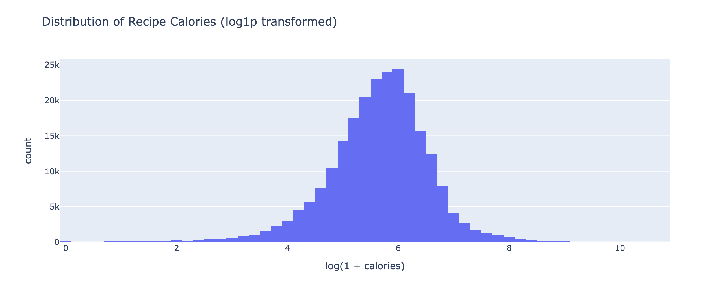
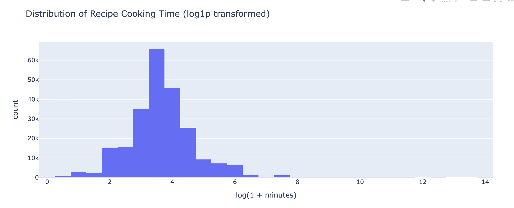
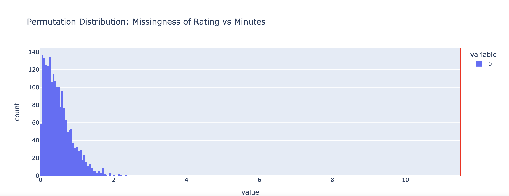
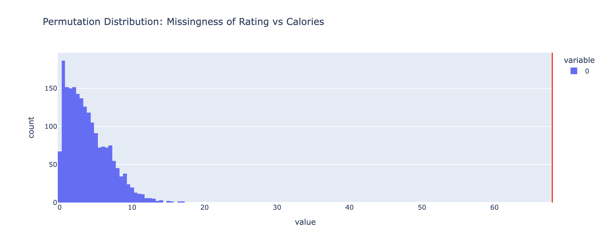
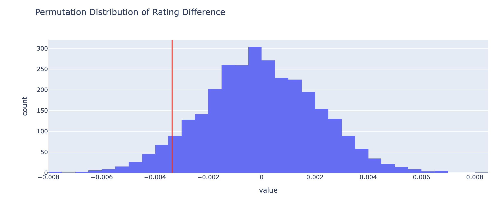
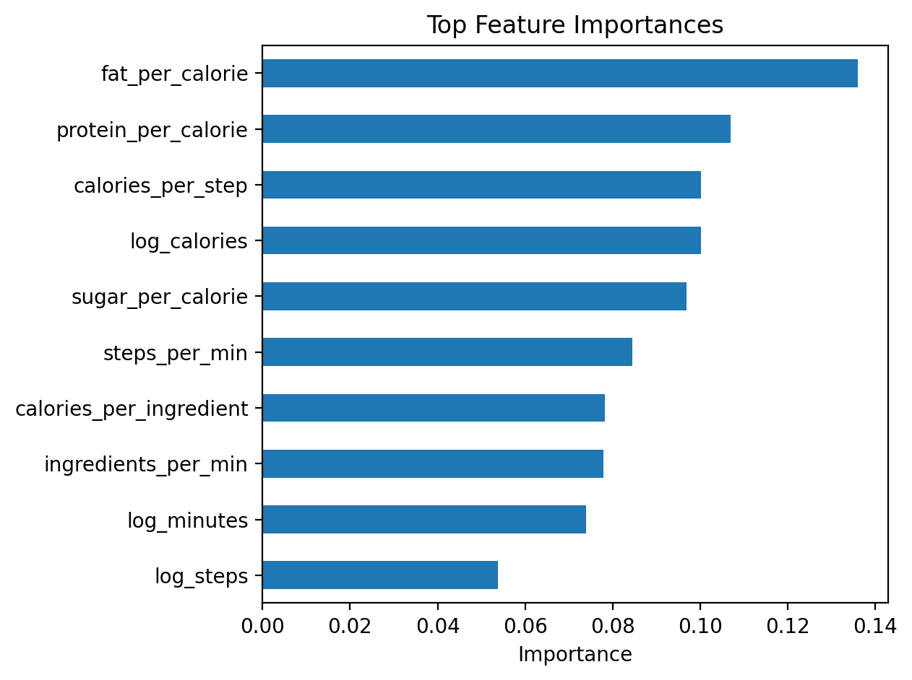
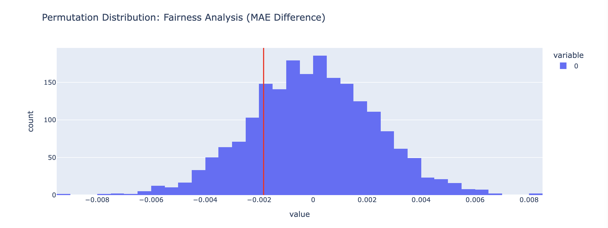

A Data Science Investigation of Recipe Tags, Nutrition, and User Preferences
Raunak Saluja and Dhruv Mittal · UC San Diego
View on GitHubrating depends on observed variables like cooking time and caloriesThis project investigates whether recipes labeled as healthy tend to receive lower ratings than other recipes on Food.com. We merged recipe metadata with user interaction data, explored nutritional and structural features, conducted permutation tests, and built regression models to predict average recipe ratings.
Do recipes tagged as healthy receive lower average ratings than other recipes?
This question is interesting because healthy foods are often perceived as less indulgent, which may affect user ratings. At the same time, users may value healthy meals when they are balanced, practical, and efficient to prepare.
We used two Food.com datasets:
RAW_recipes.csvname — recipe nameid — recipe IDminutes — preparation timesubmitted — submission datetags — Food.com tagsnutrition — nutritional informationn_steps — number of preparation stepsingredients — ingredients listn_ingredients — number of ingredientsinteractions.csvuser_id — user IDrecipe_id — recipe IDdate — review daterating — user ratingreview — review text0 with NaNsubmitted and date to datetimeaverage_rating for each recipelog_minutes and log_calories
We created a boolean feature called is_healthy_tag by checking whether a recipe’s tags contain terms like
healthy, low-fat, low-carb, low-calorie, high-protein, and low-sugar.
Calories and cooking time were strongly right-skewed, so we used log transformations to make the distributions easier to interpret.

Figure 1: Distribution of recipe calories after log transformation.

Figure 2: Distribution of recipe cooking time after log transformation.
Comparing healthy and non-healthy recipes showed that the rating difference was visually small. This suggested any relationship between healthy labeling and average rating would likely be modest.
We investigated whether missingness in the rating variable depends on other observed variables.
We believe missingness in the review column could plausibly be NMAR. Users with especially positive or negative
reactions may be more likely to leave reviews, while neutral users may be less motivated to write one.
Observed statistic: 11.50990532844287
p-value: 0.0

Figure 3: Permutation distribution for the dependence of rating missingness on cooking time.
Observed statistic: 67.977786093818
p-value: 0.0

Figure 4: Permutation distribution for the dependence of rating missingness on calories.
Since missingness in rating depends on observed variables like cooking time and calories,
the data is not MCAR. It is more consistent with MAR.
We performed a one-sided permutation test to determine whether healthy-tagged recipes receive lower average ratings.
Observed difference: -0.0033591948955473683
p-value: 0.06533333333333333

Figure 5: Permutation distribution of rating differences between healthy and non-healthy recipes.
Healthy-tagged recipes were rated slightly lower on average, but the result was not statistically significant at the 5% level. Therefore, we fail to reject the null hypothesis.
Target variable: average_rating
Task type: Regression
Evaluation metric: R²
We used only recipe-level features available before observing the final rating, such as cooking time, steps, ingredients, calories, and engineered nutritional features.
The baseline used simple recipe structure features such as log_minutes, n_steps,
n_ingredients, and log_calories. It performed poorly, with R² near zero.
We engineered richer features capturing nutritional density and recipe efficiency, including:
fat_per_calorieprotein_per_caloriesugar_per_caloriecalories_per_stepsteps_per_mincalories_per_ingredientingredients_per_minlog_minutes, log_calories, log_steps0.4236
0.4008
≈ 0.0000
The final Random Forest Regressor substantially outperformed the baseline and generalized well, with train and test performance remaining close.

Figure 6: Top feature importances from the Random Forest Regressor.
Since our final model is a regression model, we evaluated fairness by comparing mean absolute error across healthy and non-healthy recipes.
MAE for healthy recipes: 0.16935854733336686
MAE for non-healthy recipes: 0.17119278859934423
Observed MAE difference: -0.0018342412659773655
p-value: 0.4235

Figure 7: Permutation distribution for the fairness analysis using MAE difference.
The MAE difference was extremely small and not statistically significant, suggesting no meaningful fairness issue across healthy and non-healthy recipe groups.
Our inferential analysis found only a small and statistically insignificant rating difference between healthy and non-healthy recipes. On the predictive side, engineered nutritional and efficiency-based features substantially improved model performance.
A major limitation is that “healthy” was defined using tags rather than a rigorous nutrition score. Future work could build a formal health index, incorporate review text, and model user-specific preferences.
Raunak Saluja and Dhruv Mittal
UC San Diego
Data Science